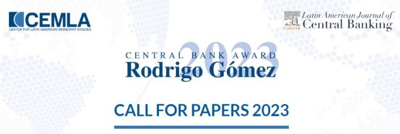
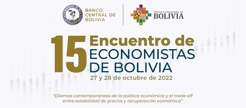
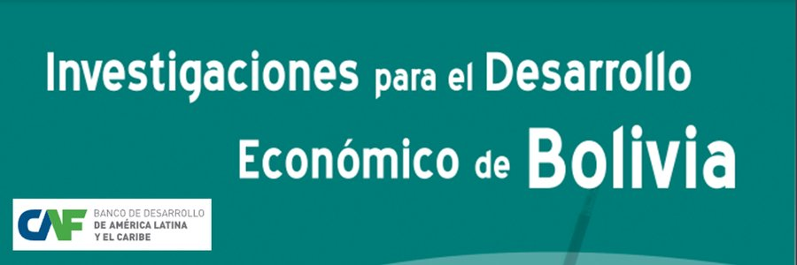
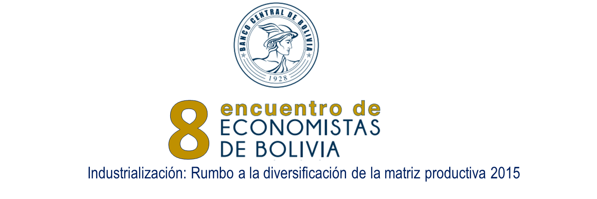

Ganador y financiamiento
Convocatoria de propuestas de investigación del Banco de Desarrollo de América Latina y el Caribe (CAF), 2025.
Como economista especializado en investigación económica, análisis de políticas y toma de decisiones basada en datos, me apasiona aprovechar el potencial transformador de la inteligencia artificial y de los métodos econométricos avanzados para abordar desafíos macroeconómicos y microeconómicos complejos. Con una trayectoria comprobada en la conducción de proyectos basados en inteligencia artificial, la realización de evaluaciones socioeconómicas y el diseño de marcos de gobernanza de datos, estoy comprometido con la formulación de políticas basadas en evidencia que promuevan el desarrollo sostenible. Mi experiencia incluye la colaboración con organismos internacionales y la provisión de insumos técnicos para orientar la política pública en Bolivia, uniendo la tecnología y el análisis económico en favor de un futuro mejor informado y más resiliente.
Convocatoria de propuestas de investigación del Banco de Desarrollo de América Latina y el Caribe (CAF), 2025.

Premio de Banca Central Rodrigo Gómez 2023, otorgado por el Centro de Estudios Monetarios Latinoamericanos (CEMLA).

Encuentro de Economistas de Bolivia 2022, organizado por el Banco Central de Bolivia.
Convocatoria de propuestas de investigación del Banco de Desarrollo de América Latina (CAF), 2021.

Convocatoria de propuestas de investigación «Desarrollo Económico en Bolivia» de CAF, 2020.

Encuentro de Economistas de Bolivia 2015, organizado por el Banco Central de Bolivia.